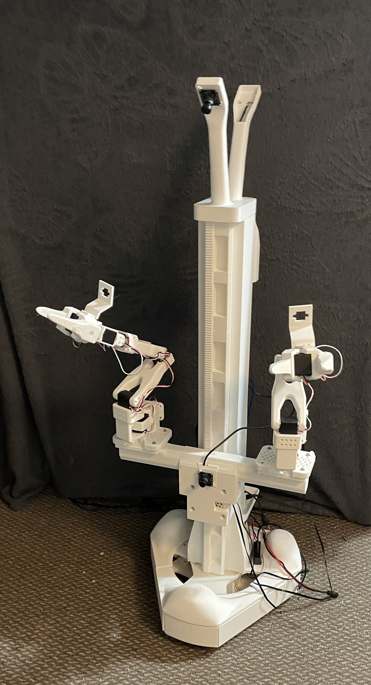

I built the open source design for the Aloha Mini robot to continue my experiments in embodied AI at a larger scale than my single SO-101 robot. I had to make a few modifications to the design to allow me to print every component on my 3D printer. Here are the modified base files that can fit on a 256mm³ print bed (Part 1 and Part 2). I am currently working on creating a VR teleop pipeline as my current dual leader arm and keyboard teleop method is rather cumbersome.